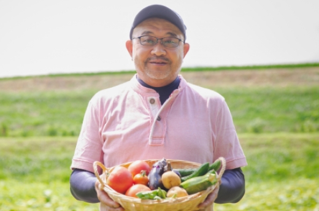
「安心安全なお野菜をご堪能ください」
ひだまり農場 （岡山県） 山田洋一
「ひだまり農場」では栽培期間中に農薬・化学肥料を一切使用せず、年間約100種類の野菜と米、卵を生産しています。 堆肥・肥料もすべて手作りし、有機質のものを使用しています。
毎日の食卓に、安心とやさしさを
収穫したての新鮮な野菜を、そのままご家庭へお届けします。
「スグ食べ」は、厳選したオーガニック農家さんの穫れたて野菜を販売しています。
食材から選べるのはもちろん、生産者からも選べます。
生産方法や生産地、それぞれ異なるこだわりで、お気に入りの農家さんを見つけてください。
最短で24時間以内に届く、新鮮なオーガニック野菜宅配サービスです。
最近よく耳にするオーガニック野菜。実は国内農家のうち
オーガニック農家の割合はわずか約0.5%です。
スグ食べでは、「安心で健やかな野菜を届けたい」想いを持って
大切に野菜を育てている農家さんを厳選し、出品いただいています。
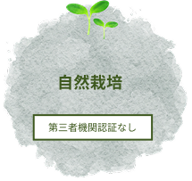
農薬・肥料・堆肥など
一切使用していません
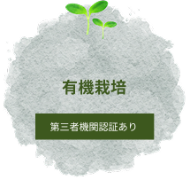
有機の農薬・肥料・堆肥だけを使用しています
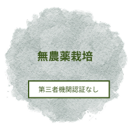
化学農薬・肥料・堆肥は使用していません
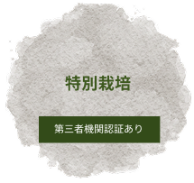
化学農薬・肥料・堆肥も使用しますが、 使用は基準値の50％以下です
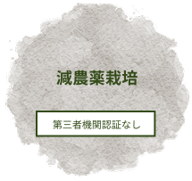
使用は基準値の50％以下です
スグ食べ農家さんの栽培方法
「なるべく収穫したばかりの状態で、野菜を味わって欲しい」
スグ食べでは、既存の産地直送サービスのように箱詰め用の倉庫を介することがありません。
農家が収穫したその日に、お客様の元へ直送で野菜をお送りします。
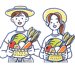
出品している生産者は、有機栽培もしくは自然栽培の農家のみ。
全ての農園が無農薬・無化学肥料など、安全にこだわって生産された「オーガニック食材」です。
そのため、どの商品も安心してお買い求めいただけます。
年間数十種の野菜を作る生産者から、今が旬の多様な野菜が届きます。
スグ食べでは生産者ごとに商品が異なります。
中には年間100種類もの多品種生産をしている生産者も。旬な野菜はもちろん、珍しい野菜とも出会えます。
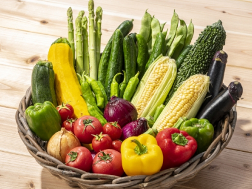
¥ 1,280 (税込 / 送料別)
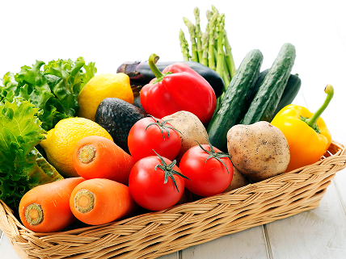
¥ 1,280 (税込 / 送料別)

ひだまり農場 （岡山県） 山田洋一
「ひだまり農場」では栽培期間中に農薬・化学肥料を一切使用せず、年間約100種類の野菜と米、卵を生産しています。 堆肥・肥料もすべて手作りし、有機質のものを使用しています。
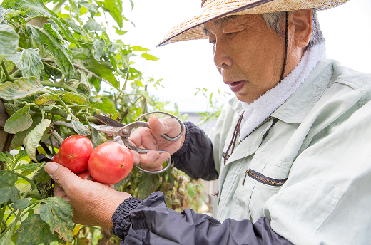
爽緑農園 太田紘一
「爽緑農園」では農薬や除草剤は一切使用せず、一つ一つのお野菜を丁寧に栽培しています。お日様の光をたくさん浴びて育ったお野菜は、葉や皮まで余すことなく食べることができます。
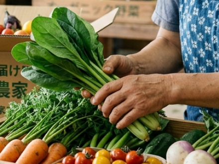
万が一、届いた商品に不備があった場合は全額返金対応いたします。
オンラインでも安心して新鮮な野菜をお楽しみください。
¥ 1,280 (税込 / 送料別)
¥ 1,280 (税込 / 送料別)
鮮度が抜群に違います。通常の産直サービスは、一度倉庫などに野菜を集め、そこで箱詰め作業をして配送しています。 この仕組みでは、お客様が商品を受け取る時には収穫してから3,4日が経過しています。 スグ食べでは、箱詰め作業を農家さんにお願いすることにより、最短で収穫当日に商品を受け取ることができます。
無農薬にこだわる、オーガニック農家さんのみが登録しています。有機栽培や自然栽培などの環境に配慮した農法で生産するには、通常以上に費用も手間もかかります。 そんな中でも、「安心な野菜を食べて欲しい」という強い思いを持って、こだわって野菜を作っている農家さんがいます。 そういった、厳選されたオーガニック農家さんのみが登録しているため、安心してお買い物を楽しんでいただけます。